The bar across the top shows the name of the page you are on. It also has:
Searchsearch on the left: find anything in TransitCore (see below).
The moon icon dark_mode: switch between light and dark mode. TransitCore remembers your choice.
The bell notifications: your notifications.
Your name on the right: click it to see your email and Log out.
Search everything
Click Search in the top bar.
Type at least 2 letters, for example Mum. You can search names, registration numbers, tracking numbers, invoice numbers and customer codes.
Results appear grouped by type: routes, trips, vehicles, drivers, shipments, invoices, customers and users. Click a result to open it.
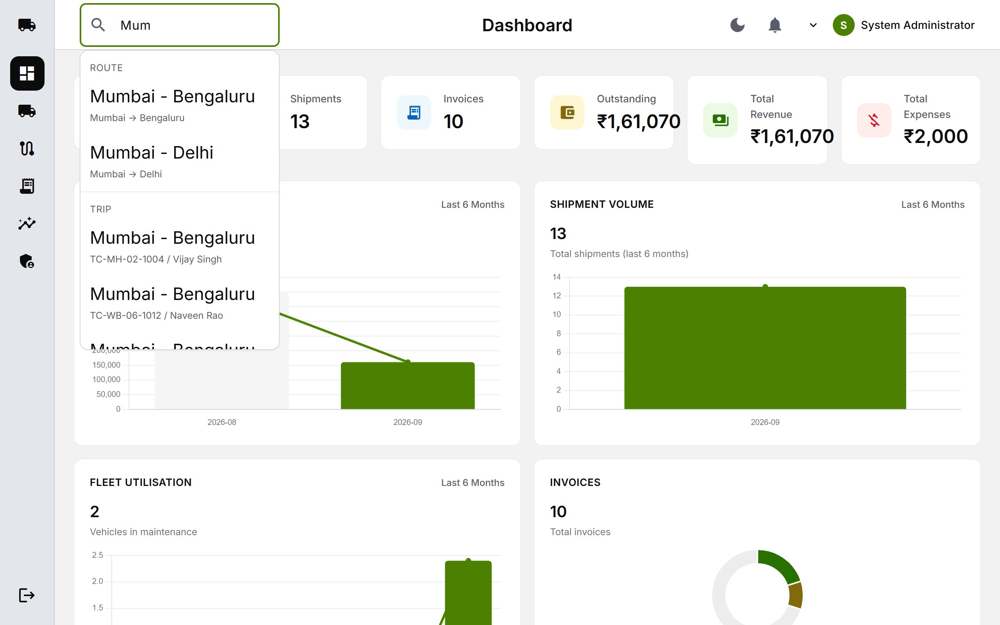
Typing "Mum" finds the Mumbai routes and the trips on them.
Work with lists
Vehicles, Drivers, Trips, Routes, Shipments, Customers, Invoices and Users are all lists that work the same way:
Search this page… filters the rows in the list.
The column button view_column shows or hides columns.
The download button download saves the list as a CSV file you can open in Excel.
Click a row to open its details. Click the pencil edit to edit it.
Items per page and the arrows at the bottom move between pages.
The green button at the top right adds a new record, for example Add Vehicle.
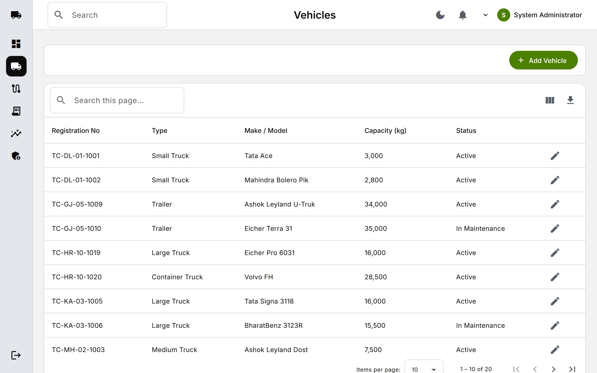
The Vehicles list. Every list has the same search, column, download and page controls.
Who can see what
What you see depends on the role your administrator gives you.
Role
Can use
User
Dashboard, Fleet, Operations and Billing
Manager
Everything a User can use, plus Reports
Admin
Everything, plus Admin (Users and Master Data)
First-time setup order
If you are setting TransitCore up for the first time, add things in this order. Each step uses data from the steps before it. For example, a trip needs a route, a vehicle and a driver.
Master data: regions, branches, cities, designations and units. How
Open it from Overview › Dashboard. It also opens when you sign in.
The Dashboard gives you a quick picture of the business. The cards across the top show Active Trips, Shipments, Invoices, the Outstanding amount, Total Revenue and Total Expenses. The charts below show revenue, shipment volume, fleet use and invoices by status.
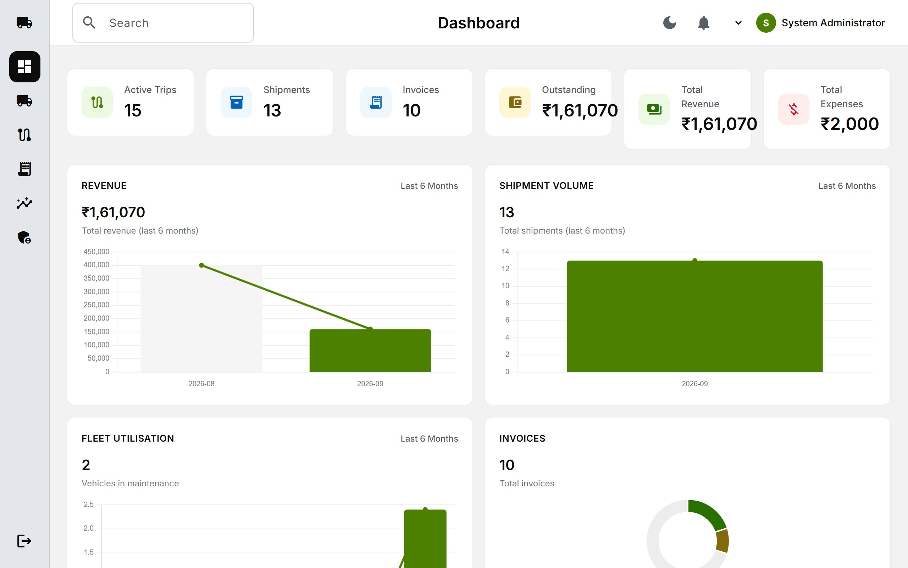
The Dashboard. Amounts are in rupees with Indian digit grouping, for example ₹1,61,070.
Fleet
groupAll roles
Keep a record of every vehicle and driver: their details, papers, servicing, fuel and performance.
Add a vehicle
Open Fleet › Vehicles
Click Add Vehicle.
Fill in Registration No, Vehicle Type, Capacity (kg) and Status. Make, Model and Manufacture Year are optional.
Click Save Vehicle.
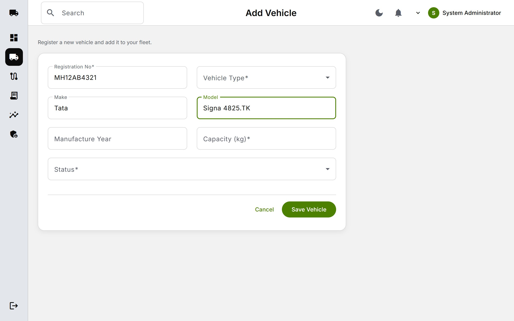
The Add Vehicle form.
Keep vehicle records: documents, maintenance and fuel
In Fleet › Vehicles, click the vehicle's row. Its details page opens.
Choose a tab:
Documents for papers such as insurance and permits (type, number, issue and expiry dates),
Maintenance for servicing (date, description, cost, odometer, who did it) or
Fuel Logs for fuel (date, litres, cost, odometer).
Fill in the form under the list and click the add button: Add Document, Add Record or Add Fuel Log.
To delete an entry, click its bin icon delete.
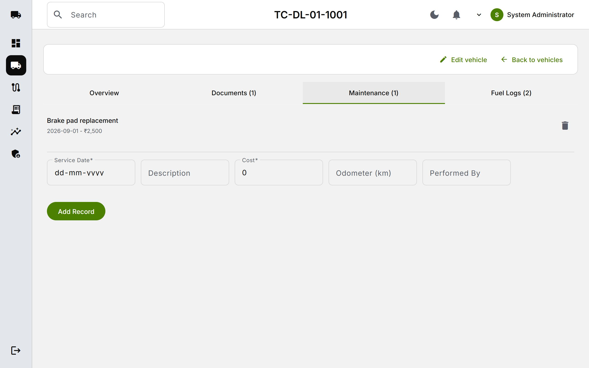
A vehicle's Maintenance tab. Use Edit vehicle at the top to change the vehicle's details.
Add a driver
Open Fleet › Drivers
Click Add Driver.
Fill in Full Name and Status, plus Phone No, Email, Date of Birth and Hire Date.
Click Save Driver.
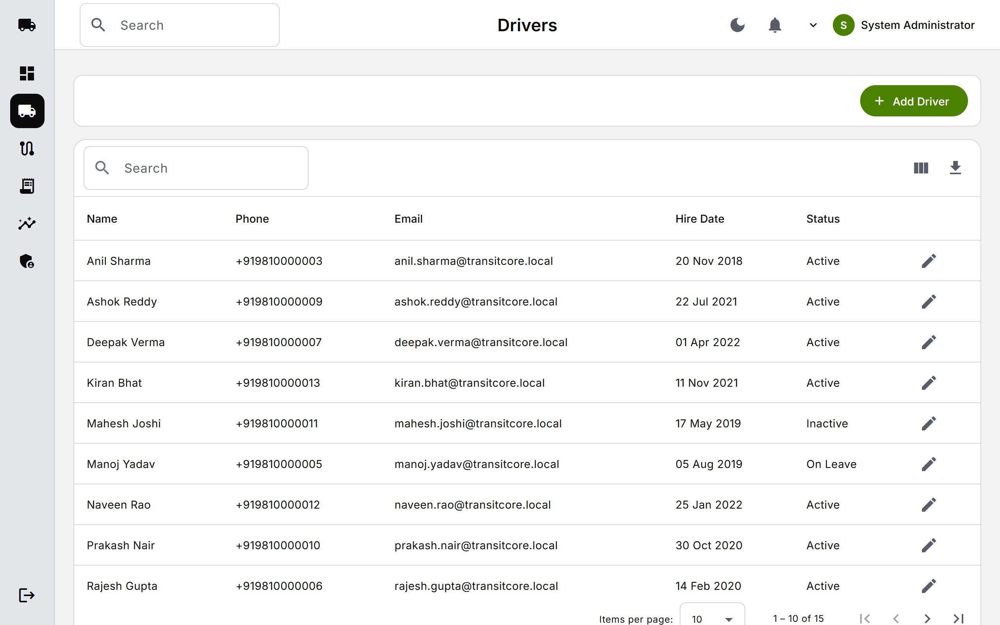
The Drivers list.
Driver details: licences, performance and settlement
Click a driver's row to open their details. The tabs are:
Licenses: add each driving licence with its number, type, issue date and expiry date, then click Add License.
Performance: total trips, completed trips, on-time delivery, delayed trips and total distance driven.
Settlement: the advances given to the driver and the expenses recorded across all of their trips, and the balance between them.
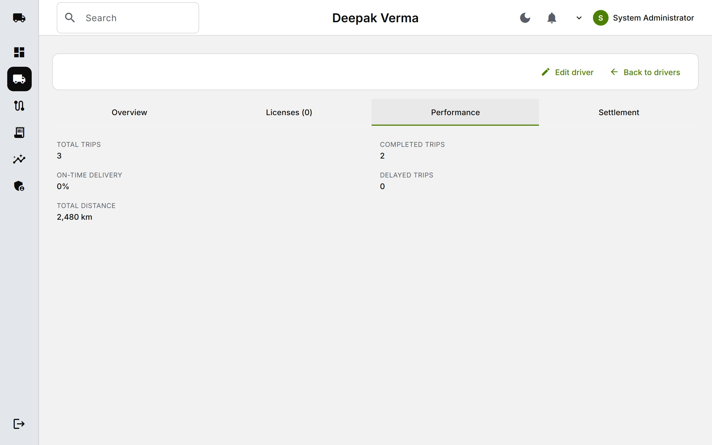
A driver's Performance tab.
Operations
groupAll roles
Plan routes, schedule trips, record what happens on the road, and book the shipments you carry.
Create a route and its stops
Open Operations › Routes
Click Add Route.
Enter the Route Name, Origin City, Destination City and Distance (km).
Click Save Route.
To add stops along the way, click the route's pencil. Under Stops, choose a City, add a Planned Arrival if you know it, and click Add Stop. Stops are numbered in the order you add them.
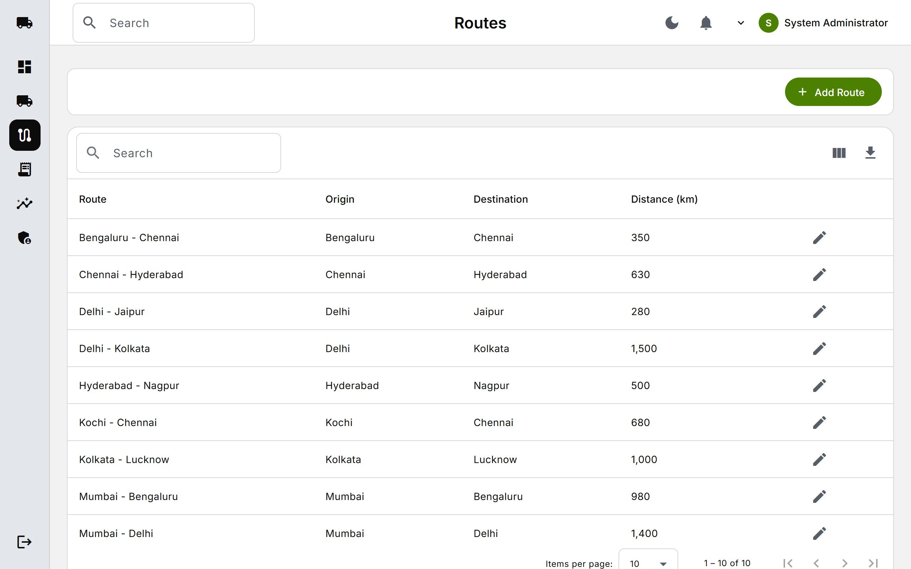
The Routes list.
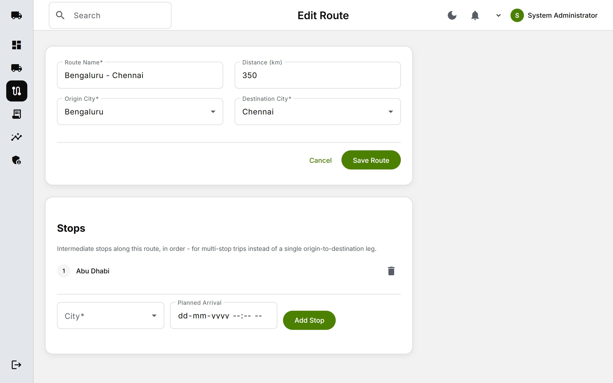
Editing a route. The Stops section is under the route details.
Schedule a trip
Open Operations › Trips
Click Schedule Trip.
Choose the Route, Vehicle, Driver and Status.
Set the Scheduled Departure and Scheduled Arrival date and time.
Click Schedule Trip.
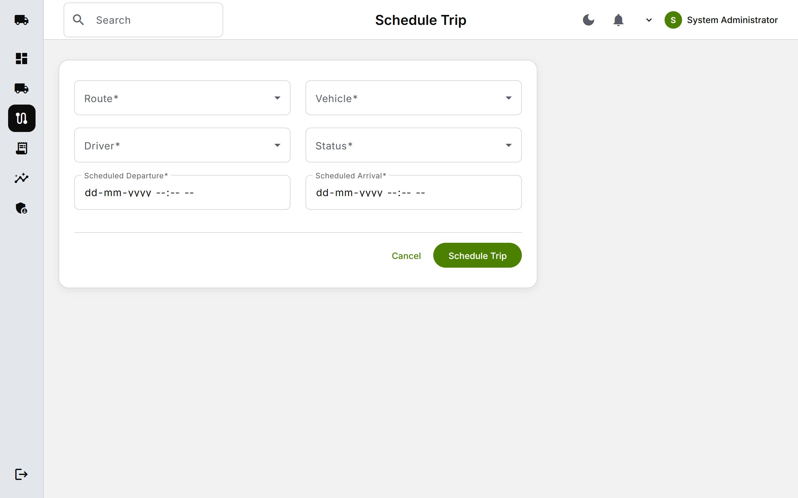
The Schedule Trip form.
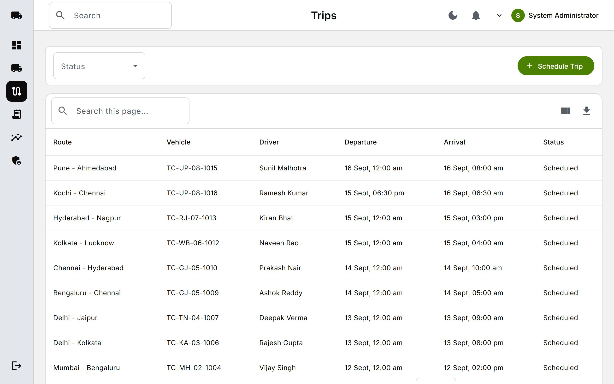
The Trips list. Use the Status filter at the top to show only trips with one status.
Run a trip: status, costs and delivery
Click a trip in Operations › Trips to open it. Everything that happens on the trip is recorded here.
Update the status. On the Overview tab, choose the new status under Update status and click Apply. Every change is listed on the Status History tab. Overview also shows the load on the vehicle against its capacity.
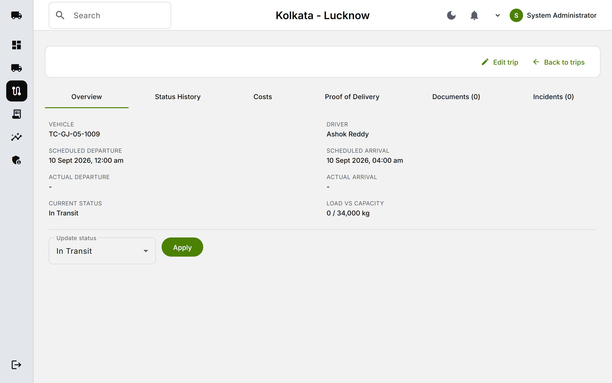
A trip's Overview tab with the status control at the bottom.
Record costs. On the Costs tab, enter each expense (Expense Type, Amount, Date, notes) and click Add Expense. Record cash given to the driver the same way under Advances with Add Advance. The totals and balance at the top update.
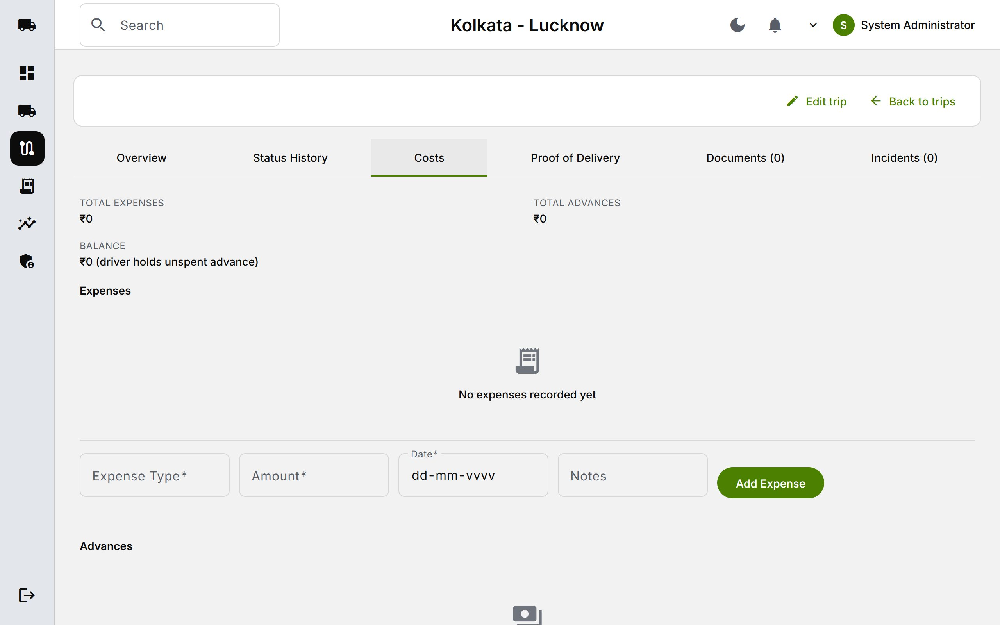
The Costs tab. Advances are further down the same tab.
Record the delivery. On the Proof of Delivery tab:
Enter the Receiver Name, Receiver Phone and Delivered At time, and any notes.
Ask the receiver to sign in the Receiver Signature box using a mouse or a finger. Click Clear to start the signature again.
Add delivery photos if you have them.
Click Record Delivery.
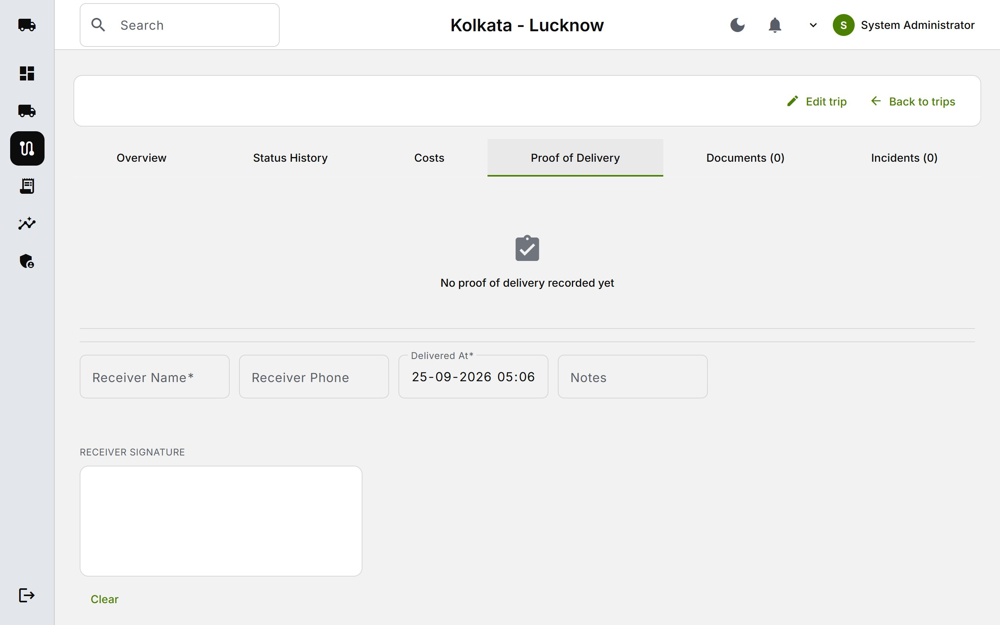
The Proof of Delivery tab.
Papers and problems. Use the Documents tab to upload trip papers: choose the document type, pick the file and click Upload. Use the Incidents tab to record a breakdown, delay or damage: choose the incident type, describe it and click Report Incident.
Book a shipment
Open Operations › Shipments
Click Add Shipment.
Choose the Customer, Shipment Date, Origin City, Destination City and Status.
Choose the Freight Payment type:
To Be Billed if you will invoice the customer later (this is the default),
Paid if the freight is already paid, or
To Pay if the money is collected at delivery.
Under Items, enter each item's Description, Qty, Unit and Weight (kg). Click Add Item for another line.
Click Save Shipment. The shipment gets a tracking number, such as TRK000014, and a consignment note number.
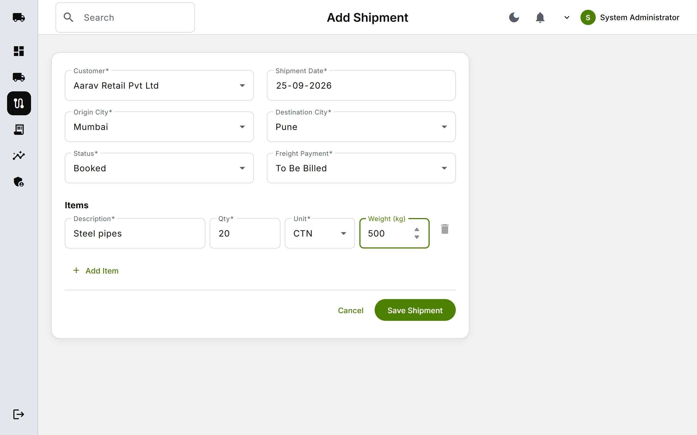
A new shipment ready to save.
You can change a shipment later with its pencil in the list, but not its items.
The Shipments list. Each shipment has a tracking number.
Let customers track a shipment
Customers can check a shipment themselves. They don't need an account.
Give the customer the shipment's tracking number, for example TRK000001, and the tracking page address. This is your TransitCore address followed by /#/track. In the test setup: http://localhost:4200/#/track
The customer types the tracking number and clicks Track.
They see where the shipment is from and going to, the shipment date and its current status.
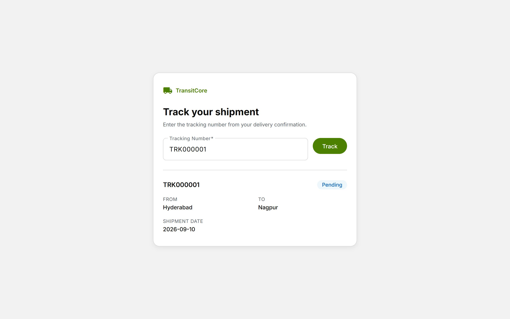
The public tracking page.
Upload vehicle orders from Excel
Open Operations › Bulk Upload
Click Download Template.
In the file, put the Order No in column A and the Vehicle No in column B, one row per order.
Save the file in .xlsx format.
Drag the file onto the upload box, or click Browse File and choose it.
Click Upload.
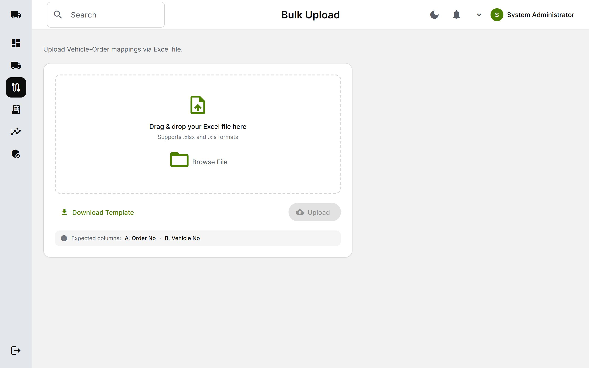
The Bulk Upload page.
To look up uploaded orders later, open Operations › Vehicle Orders, pick a From Date and To Date, and click Search.
Billing
groupAll roles
Set up customers and prices, raise invoices, record payments and follow up on unpaid bills.
Add a customer
Open Billing › Customers
Click Add Customer.
Enter a Code (for example CUST016) and the customer's Name.
Enter a Credit Limit, or leave it blank for no limit.
Click Add Customer.
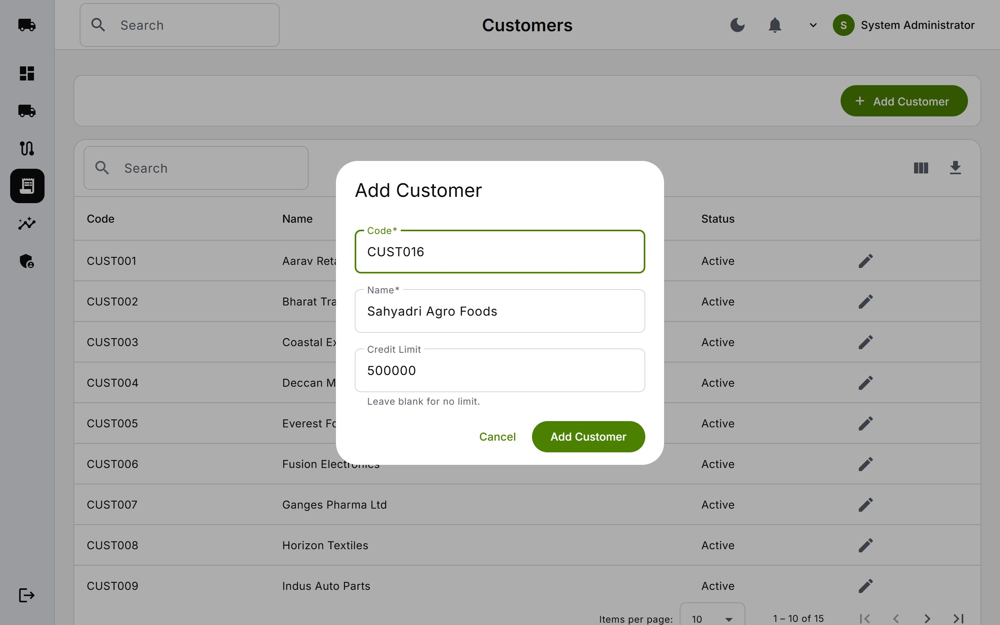
The Add Customer window over the Customers list.
Set up rate cards (your prices)
Open Billing › Rate Cards
A rate card sets your price per kilogram and per kilometre. TransitCore uses it to price shipments when you generate invoices from them.
Under Add Rate Card, choose a Customer, Origin City and Destination City. Leave any of them empty to mean "any".
Enter the Rate per Kg and Rate per Km.
Set Effective From, and Effective To if the price ends on a date.
Click Add Rate Card. It appears under Existing Rate Cards.
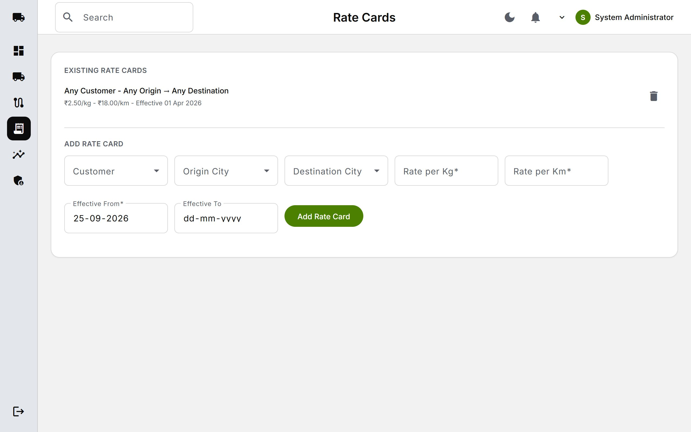
A rate card for all customers and routes at ₹2.50/kg and ₹18.00/km.
Rate cards can't be edited. To change a price, delete the card with its bin icon and add a new one.
Generate an invoice from shipments
Open Billing › Invoices and click Generate from Shipments
Choose the Customer and a From Date and To Date, then click Load Shipments. You see that customer's shipments that have not been invoiced yet.
Tick the shipments to bill. The tick box at the top selects every shipment that has a price. Shipments marked "No rate card" can't be ticked until a rate card covers them.
Check the estimated total, then fill in the Invoice No, Invoice Date, Due Date, Discount Amount, Tax Amount and Status.
Click Generate Invoice. The new invoice opens.
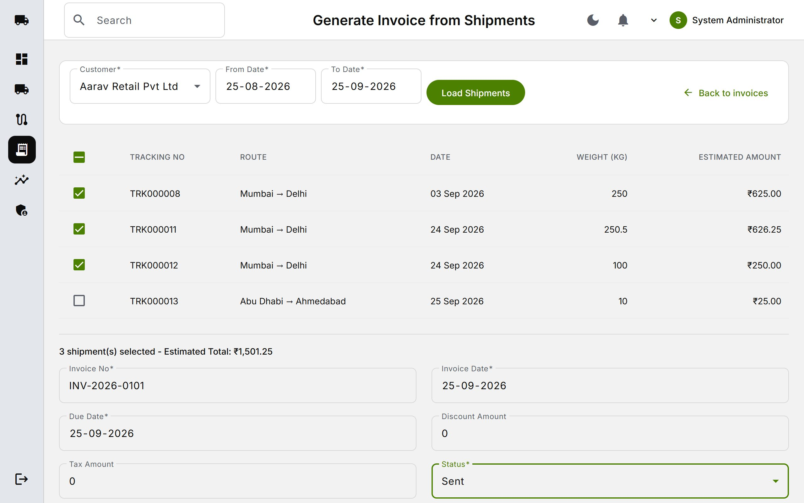
Three shipments ticked, with an estimated total of ₹1,501.25.
Create an invoice by hand
Open Billing › Invoices and click Add Invoice
Enter the Invoice No, Customer, Invoice Date, Due Date and Status, plus any Discount Amount and Tax Amount.
Under Lines, enter each line's Description, Qty and Unit Price. Click Add Line for another line.
Click Save Invoice.
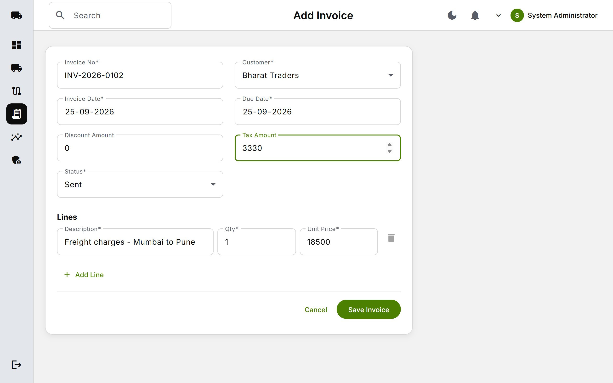
A manual invoice with one line.
Find an invoice and download the PDF
Open Billing › Invoices
The list shows each invoice's number, customer, dates, total and status. Click the PDF icon picture_as_pdf on a row to download that invoice.
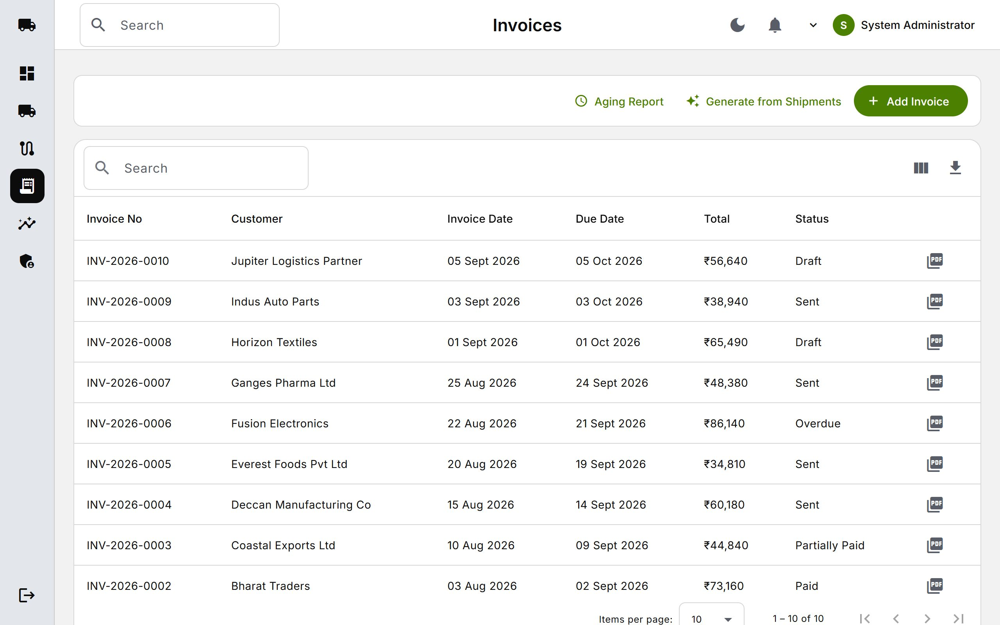
The Invoices list.
Click an invoice to open it. The Overview tab shows the lines, subtotal, tax, total, amount paid and balance due. Click Download PDF to save or print it.
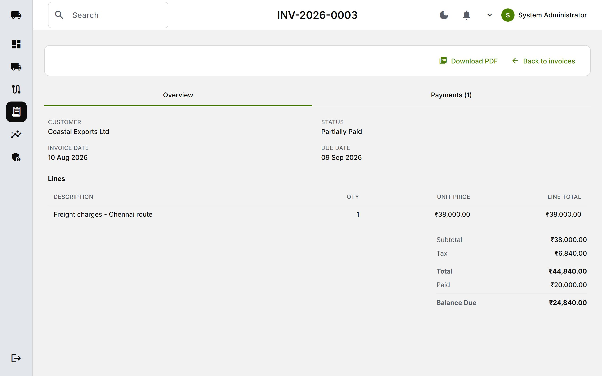
An invoice's Overview tab.
Record a payment
Open the invoice and click the Payments tab.
Check the Payment Date. The Amount is already filled in with the balance due. Change it for a part payment. It can't be more than the balance.
Choose the Method: Cash, Bank Transfer, Cheque, UPI or Card. Add the Reference No, such as a cheque or UTR number.
Click Record Payment. The invoice status updates by itself, for example to Partially Paid or Paid.
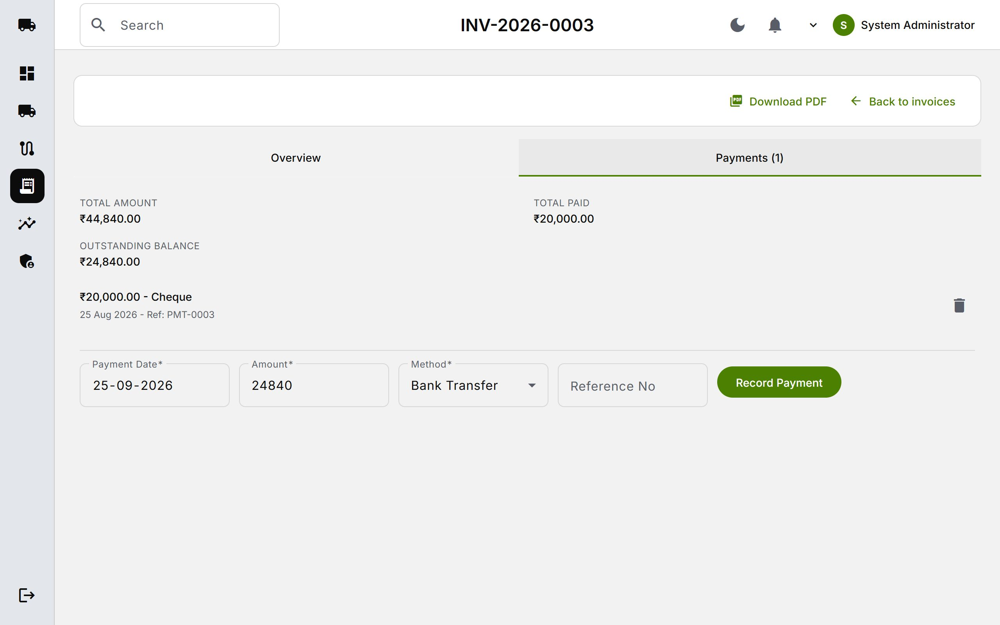
The Payments tab, with the balance of ₹24,840 filled in.
Check unpaid invoices (aging report)
Open Billing › Aging Report, or click Aging Report on the Invoices page
Choose the As of Date (today by default) and click Refresh.
The boxes show how much is unpaid: Current (not yet due), 1–30 days, 31–60 days, 61–90 days and 90+ days overdue, plus the total outstanding.
The table lists every unpaid invoice. Days overdue are shown in red. Click an invoice number to open it.
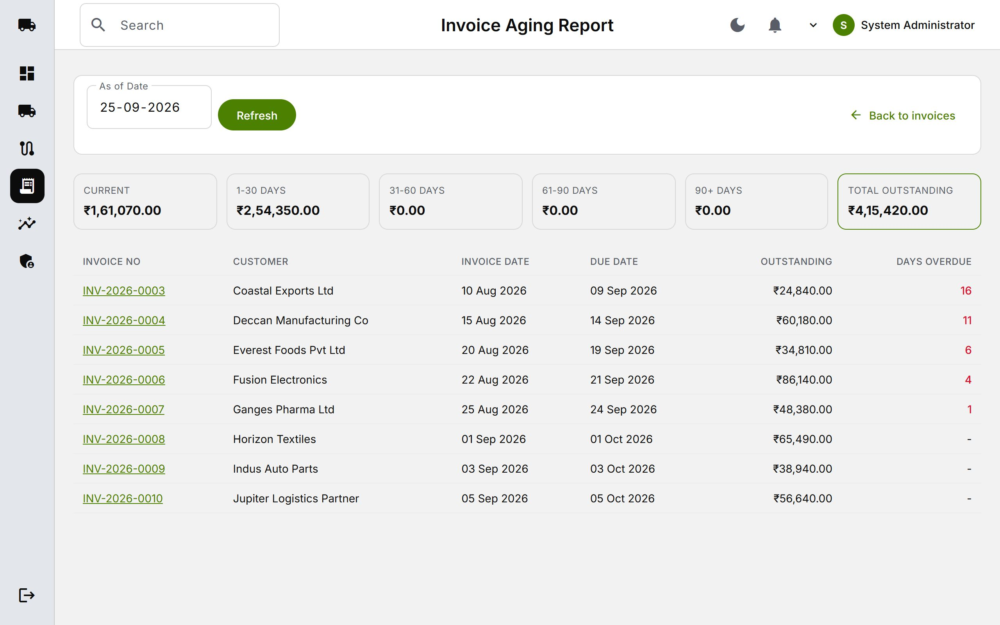
The aging report as of 25 Sep 2026.
Reports
lockAdmin and Manager
Open Insights › Reports
Revenue by Period: the amount invoiced and collected each month.
Fleet Utilisation Trend: how much of the fleet was in use each month.
Shipment Volume Trend: the number of shipments each month.
Driver Settlement Summary: advances, expenses and balance for every driver. Click a name to open that driver.
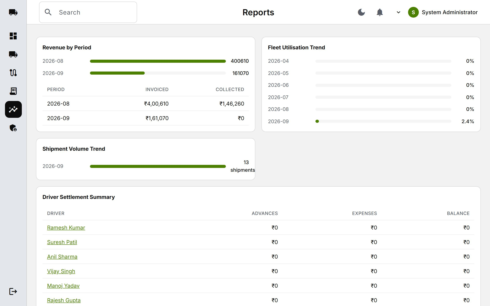
The Reports page.
Administration
lockAdmin only
Create user accounts and keep the lists that other screens use up to date.
Add a user
Open Admin › Users
Click Add User.
Enter the Email, Password and Display Name. Fill in Phone No, Employee Code, Designation, Working Designation, Region, Punch Location, Shift and Company if you use them.
Choose the user's Branches and Roles (User, Manager or Admin).
Click Save User.
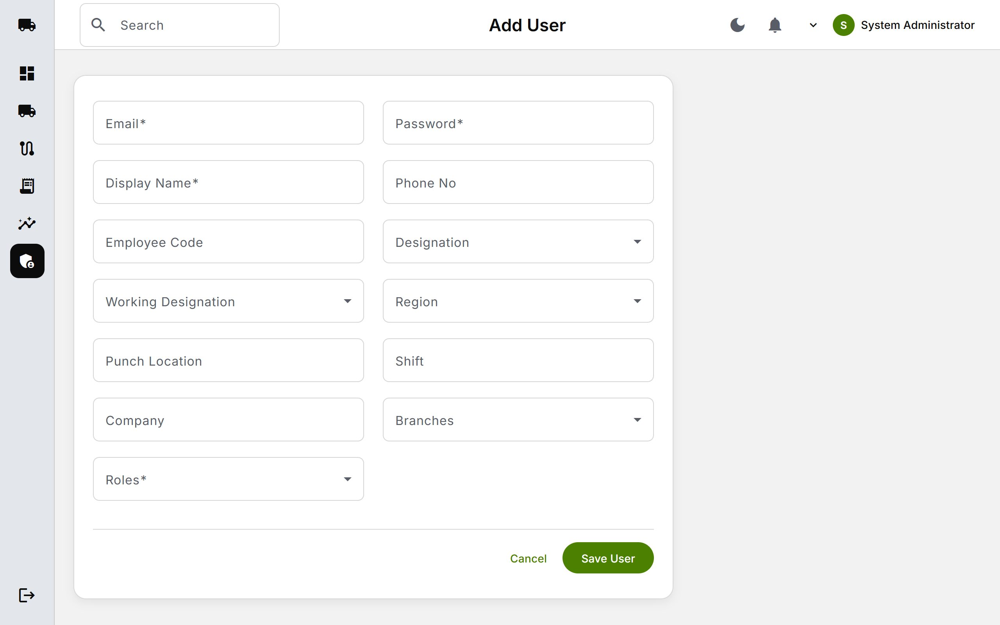
The Add User form.
To change a user, click their row. Untick Active to stop them from signing in.
To reset a password, click the key icon vpn_key on the user's row.
Role and access changes take effect the next time the user signs in.
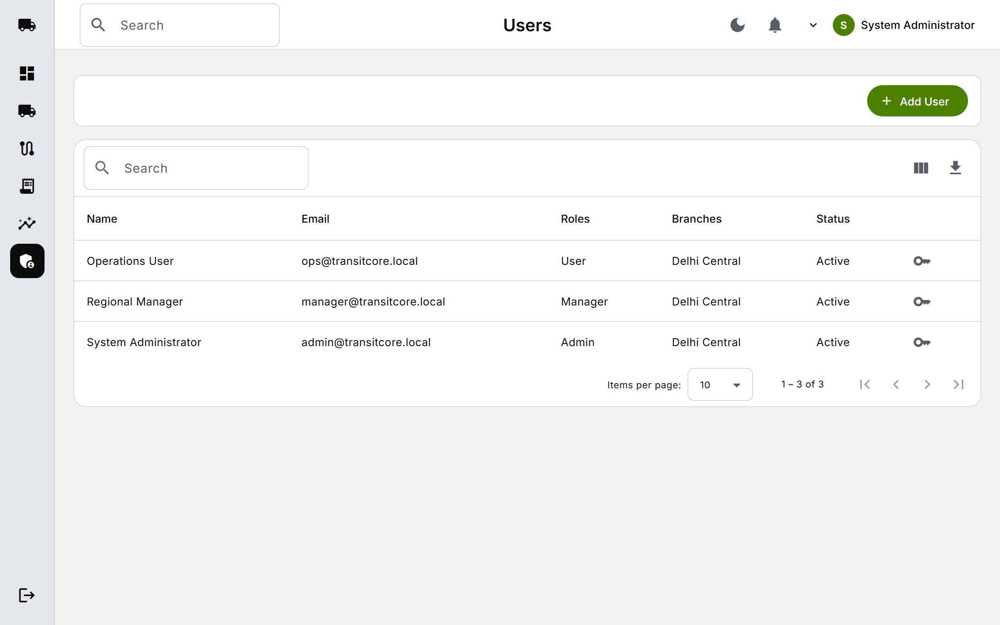
The Users list.
Keep master data up to date
Open Admin › Master Data
Master data holds the lists that other screens use: Regions, Branches, Designations, Working Designations, Countries, Cities, Units of Measure and Status Codes. Each has its own tab.
Open the tab you need.
To add an entry, fill in the form at the bottom of the tab and click its add button, for example Add Branch. A branch needs a Name, a Code of up to 10 characters and a Region.
To change an entry, click its pencil, make the change and click Save Changes. To remove it, click the bin.
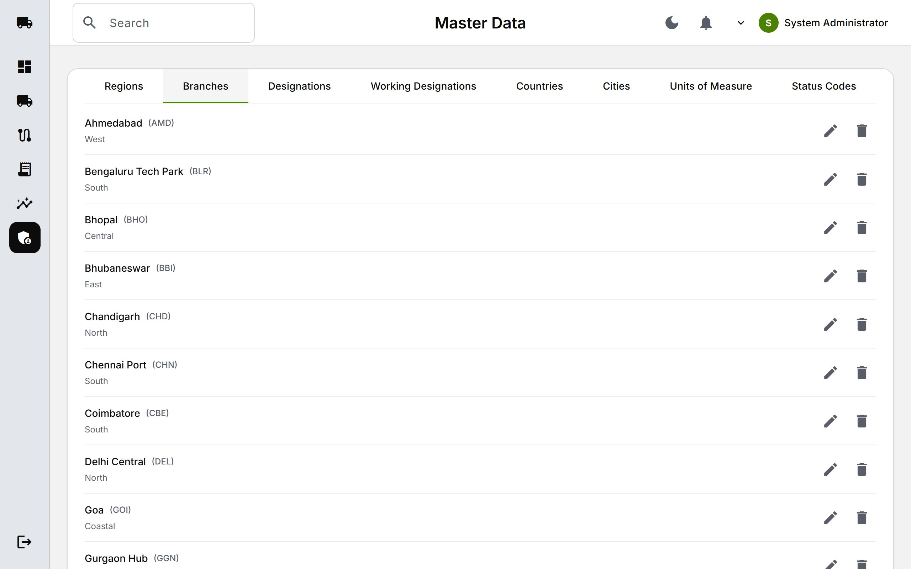
The Branches tab. The branch code is shown in brackets.
Messages and tips
What common messages mean and what to do about them.
Message
What it means and what to do
… already exists for example: Invoice No "INV-2026-0010" already exists.
Another record already uses that number or code. Use a different one.
Due date can't be before the invoice date.
A value breaks a rule. Messages like this one say which rule. Correct the value and save again.
Your account has no primary branch configured.
Your user has no branch, so you can't book shipments. Ask your administrator to add a branch to your user.
Scheduling conflict detected
The vehicle or driver is already on another trip at that time. Change the trip, or click Save anyway if you are sure.
Discard unsaved changes?
You are leaving a form you haven't saved. Click Stay on page to keep your work, or Discard changes to leave.
You don't have permission to do that.
Your role can't use this page or action. Ask your administrator if you need it.
Cannot reach the server.
TransitCore can't connect. Check your internet connection and try again. If it keeps happening, tell your administrator.
You are sent back to the sign-in page
Your session has ended. This happens after 8 hours in the current setup. Sign in again.
Date fields use the day-month-year format, dd-mm-yyyy.
Money is shown in rupees with Indian digit grouping, for example ₹1,61,070.
To sign out, click your name at the top right and choose Log out, or click the arrow icon at the bottom of the left menu.